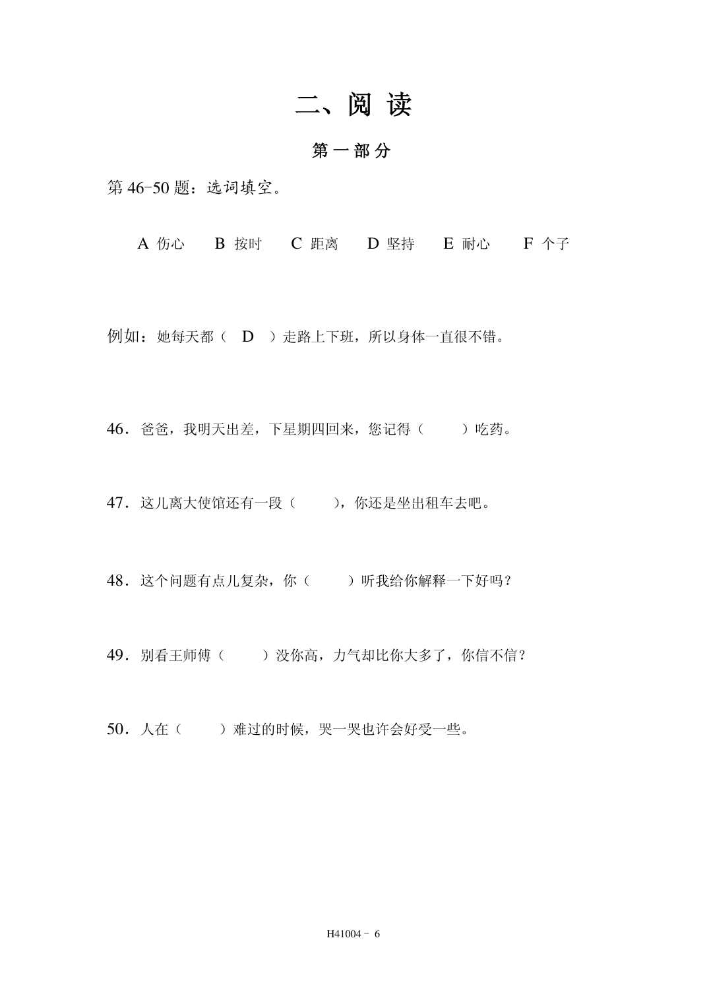
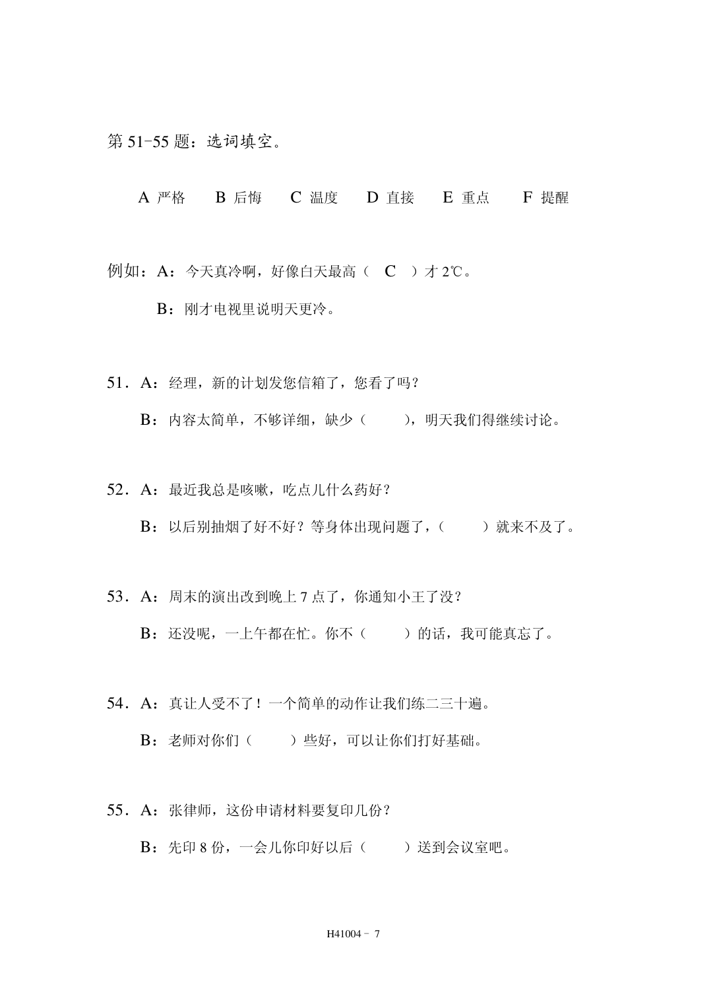
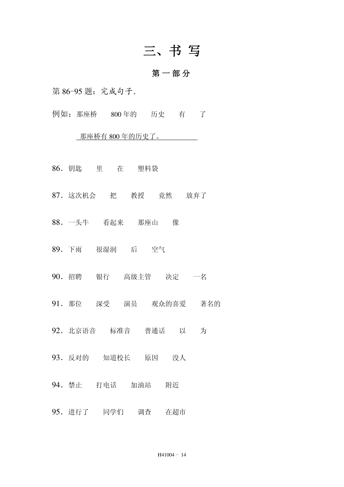
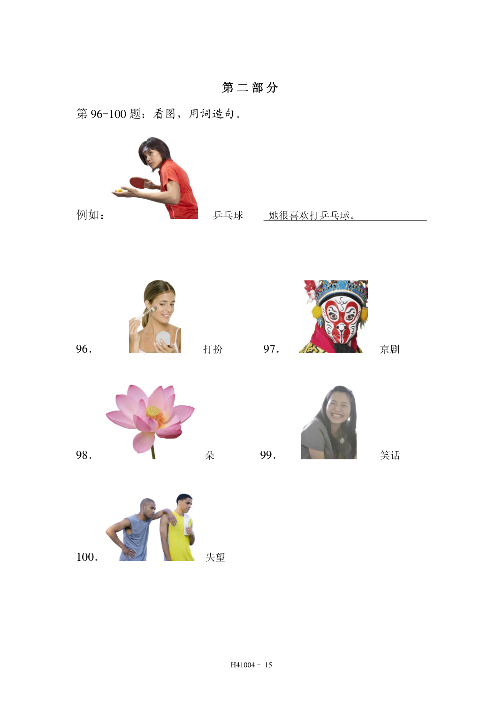

HSK4 – Đề 4 (H41004)
Kiểm tra PDF gốc. Không hiển thị đáp án. Chưa thay đổi SQL Server.
Từ cho sẵn 96–100: 96: 打扮 · 97: 京剧 · 98: 朵 · 99: 笑话 · 100: 失望
Trang 7

Trang 8

Trang 15

Trang 16

Kiểm tra PDF gốc. Không hiển thị đáp án. Chưa thay đổi SQL Server.
Từ cho sẵn 96–100: 96: 打扮 · 97: 京剧 · 98: 朵 · 99: 笑话 · 100: 失望



